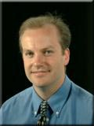
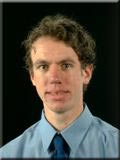
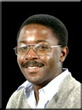

Authors
Richard Tateson
Richard Tateson is a member of the Future technologies Group in the Complex Systems Lab of the Advanced Communications Research department (ACR). After completing a Biochemistry BA at Cambridge University, Richard moved to the Zoology department (still at Cambridge) to do a PhD in the developmental biology of fruitflies. In 1997 he finished the PhD and came to the laboratories at Adastral Park to join the Future Technologies Group.
Richard's role at BT is to identify and exploit natural solutions to telecommunications problems. His particular interests are in the areas of cell biology, development, morphogenesis and gene expression.
Mark Shackleton
 |
Mark Shackleton graduated from Sheffield University in 1986 with a BSc in Computer Science. He first worked for Singer Link-Miles, manufacturers of commercial flight simulators, developing real-time 3D computer graphics algorithms and systems. He joined the Image Processing and Computer Vision group at BT in 1989. In this group he designed and implemented a number of systems in areas such as automatic face recognition, and content retrieval from images and video sequences. During this time he spent two periods of six months seconded to the MIT Media Laboratory working closely alongside researchers there. In 1996 Mark moved across to the Future Technologies Group at Adastral Park, whose remit is to develop novel solutions to BT's problems using a nature-inspired approach. He is currently working on research and applications within the domain of evolutionary computation.
Paul Marrow
Paul Marrow began his career as a biologist, gaining an MA in Pure and Applied Biology from Oxford University and DPhil in mathematical biology from York University. He held a Royal Society research fellowship at Leiden University, before moving to Cambridge University, where his research focused on evolutionary dynamics, coevolutionary theory and the evolution of reproductive strategies. He moved to BT's Future Technologies Group at Adastral Park in April 1997, where he works on biologically motivated solutions to computing and telecommunications problems. His recent work has addressed the evolvability of artificial and natural evolutionary systems, as well as applications of evolutionary theory to resource allocation and strategic modelling. Recently he has been involved in setting up the DIET (Decentralised Information Ecosystems Technologies) project, a major European collaboration under the Framework V programme.
Erwin Bonsma
 |
Erwin Bonsma has recently joined BT's Future Technologies Group at Adastral Park. Erwin studied Electrical Engineering at the University of Twente and received an MSc degree with an endorsement in Computer Science and distinction in June 1997. He specialised in non-symbolic AI at the University of Edinburgh where he obtained an MSc degree in Artificial Intelligence with distinction in September 1998.
Glenn Proctor
Glenn has a first class honours degree in chemistry from the University of Glasgow, and a D.Phil in molecular modelling and visualisation from the University of York. He worked at BT Labs for almost three years, in a role that involved carrying out world-leading research into artificial life technology, with particular emphasis on integrating artificial life into shared virtual worlds. He produced the internationally-renowned "Information Flocking" demonstration, which is to form the basis of a key BT exhibit in the Millennium Dome. Glenn was actively involved in several other areas of research, including pioneering work into the use of live data streams in virtual worlds. In May 1999 he left BT to join Cyberlife in Cambridge where he now leads a team in the research department.
Chris Winter
Chris Winter received a BA in Biochemistry from Oxford University in 1980, and a PhD in Solid State Physics from Lancaster University in 1982. He won an ‘1851 Fellowship’ prior to joining thr Optical Materials Division at BT in 1985, where he worked on liquid crystals, all-optical switches using organic materials, and molecular computers. In 1991 he joined Systems Research Division to study evolutionary software. In 1993 he moved to the Intelligent Systems Unit to head a team developing intelligent agents for network management. In January 1996 he moved back to Systems Research to head the ‘Artificial Life’ group looking for biologically inspired ways to improve software robustness and productivity.
Hyacinth Nwana
 |
Hyacinth S Nwana is a principal research scientist/engineer and technical group leader in the Applied Research and Technology (ART) department at Adastral Park. He holds a BSc in Computer Science and Electronic Engineering, an MSc in Computer Science and a PhD in Artificial Intelligence/Computer Science (1988). He also recently completed (November 1997) an MEd degree in Computer Science Education at Queen's College, the University of Cambridge. Between 1989 and 1995, he worked in various roles (lecturer, researcher, visiting or contract scientist) for the Universities of Liverpool, Keele and Calgary (sponsored by the Royal Society), Shell Research Labs, Unilever Research Labs and BT. He joined BT at Adastral Park fully in October 1995. In 1991, he principally won the DEC European AI prize. In 1997, he led BT's agents-based project (ABW-ZEUS) which won the prestigious British Computer Society top award for innovation. He is a member of the British Computer Society and a Chartered Engineer. He currently runs the Future Technologies group investigating novel biologically motivated computing models, software agents, believable interface agents, cognitive systems, and the application of such techniques to telecommunications and other computing problems.
© Copyright British Telecommunications plc 1999